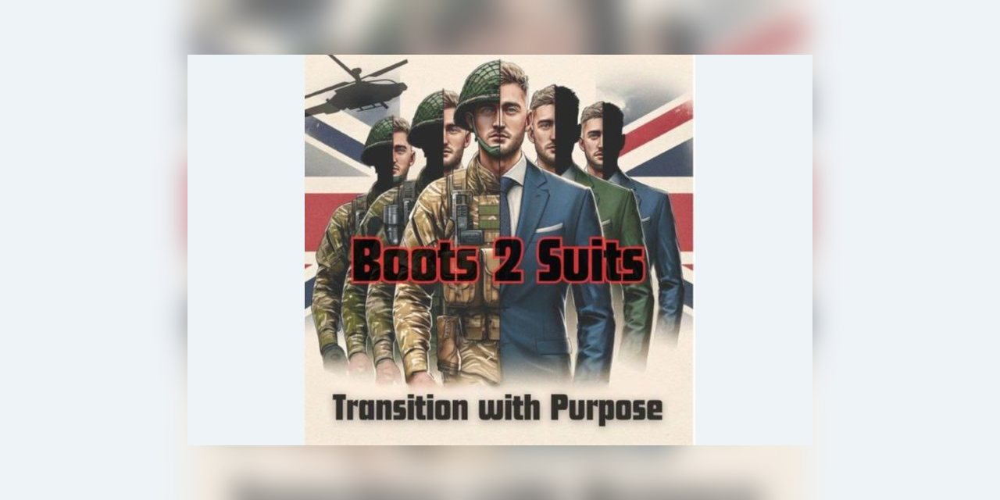
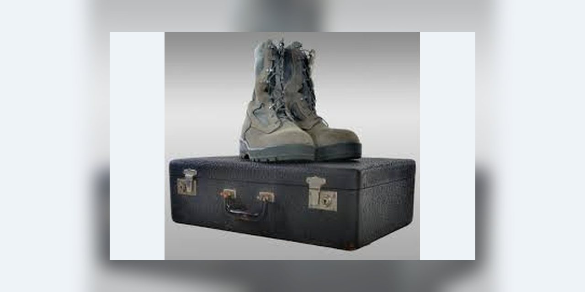
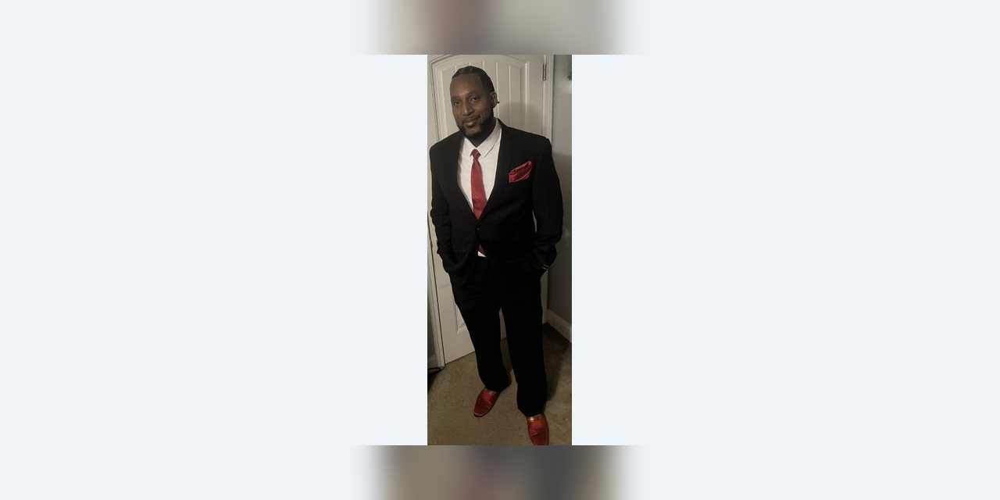

“Service doesn’t end when the uniform comes off — it evolves.”
Transition from Military to Business
The transition is a process. A strong plan helps you move from structured military systems to self-directed leadership in business.
- Assess Transferable Skills
- Veterans should begin by identifying transferable skills gained during military service, such as leadership, teamwork, logistics management, and problem solving, and apply them to civilian business environments.
- Translate Your Skills
- Transitioning to entrepreneurship requires adapting from a hierarchical command structure to independent decision-making in competitive markets where success is driven by customer needs, innovation, and flexibility.
- Gain Business Education and Training
- Veterans should seek education in entrepreneurship, finance, marketing, and operations to build foundational business knowledge.
- Develop a Business Plan
- Creating a business plan allows veterans to define their mission, target market, budget, and growth strategy.
- Build a Strong Professional Network
- Networking with other entrepreneurs, veterans, and industry professionals helps veterans gain insight, mentorship, and partnership opportunities.